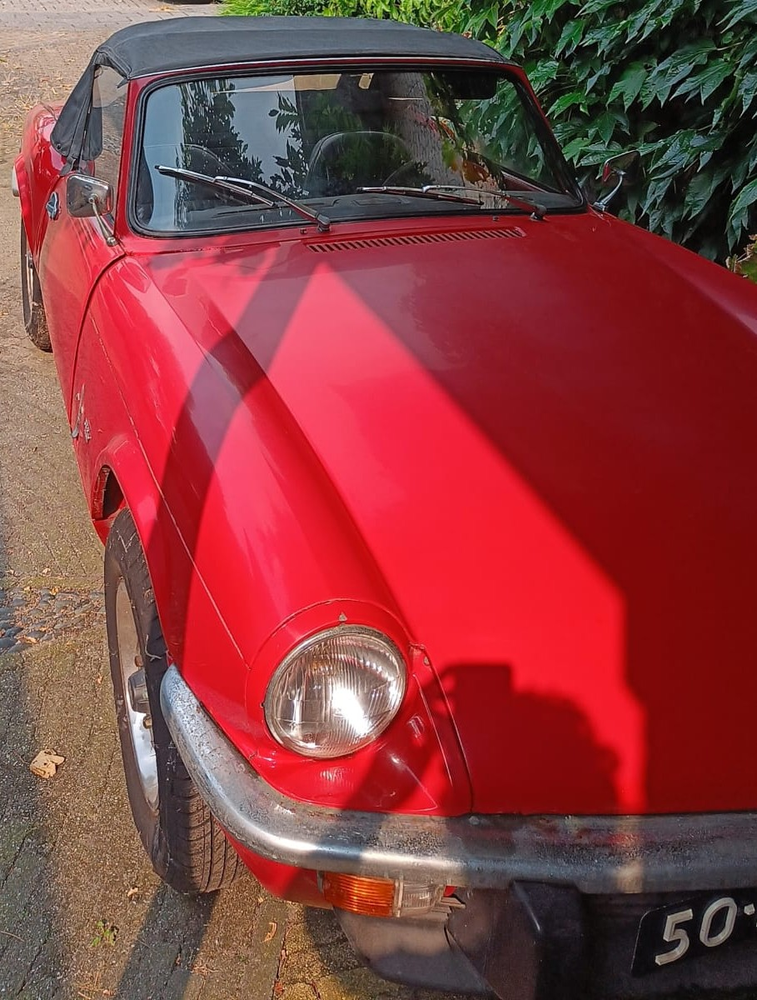

I’m a Mechatronics Engineering student with a passion for learning and exploring new ideas. Through this website, I’d like to give you a closer look at what I’m working on — and what I’ve already accomplished — in the field of engineering. I’m always eager to expand my knowledge, for example by taking courses like Harvard’s renowned CS50: Introduction to Computer Science.
